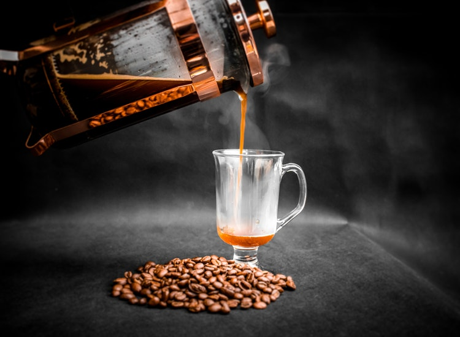

REFRIGERATOR BUYING GUIDE
22/6/2019
Cost Range
Shoppers can expect to pay ksh.35,000 for a cramped top-freezer
appliance in a plain white wrapper and as much as ksh250,000 and up for a roomy
bottom freezer with French doors, through-the-door water and sleek stainless shell.
Types
Refrigerators come in three main body configurations: side-by-side, top-
mounted freezer, and bottom-mounted freezer. The popular French-door style is a
newer sub-set of the bottom-mounted freezer. Generally, refrigerators increase in
capacity and price along with convenience and style.
Top-mounted freezer Called such owing to the freezer-above-fridge configuration, these economical fridges are the natural choice for shoppers with space and budget constraints, Logsdon says. Prices largely fall in the ksh.40,000 to ksh.60,000 range.
Side-by-sideBecause these models offer convenient access to both the freezer and the fridge, and more than adequate interior space (22 to 26 cubic feet), they are the most popular category on the market.
Bottom-mounted freezerThough they generally offer the same space as top- mounted freezers (16 to 23 cubic feet), bottom-mount freezers are more convenient simply because the main compartment is at eye level
Features
As with most appliance,convenience,flexibility and style improve with a higher price tag. "A lot of the features are lifestyle dependent," says Logsdon. Shoppers should decide what features are important to them and why. Sleek stainless steel models, for instance, come at a premium of a couple hundred thousand shillings over identical white models.
Energy Use
Residential refrigerators gobble up approximately one sixth of a home's
electricity consumption. The good news is that today's appliance are considerably
more energy efficient than previous models. Simply by replacing a 10-year-old fridge
with a new Energy Star model, shoppers will save roughly $30 off their annual utility
bills.
COUNTERTOP appliance BUYING GUIDE
21/6/2019

Blenders and Juicers
Watts determine speed and power, ranging from 200 to 1,500.
Higher wattages pulverize ice, frozen fruits and nuts more easily than lower wattages.
Carafes range from 4 to 9 cups and are available in glass, which is heavier and offers transparency for easy monitoring; stainless steel, which is nonstaining; and plastic for light weight and handling safety. Look for bisphenol A (BPA)-free plastic to reduce exposure to carcinogens.
coffee,Tea and Espresso Makers
Whether you choose single-serve or full-pot brewing, make sure your appliance is pod compatible for added convenience. coffee pods are prepackaged coffee units that eliminate the need to measure loose grounds and use coffee filters.
Some brewers accommodate both single-serve cups, pods and loose ground coffee within a single unit.
Popular features to consider include integrated bean grinders for the freshest- tasting coffee, temperature adjustment for those who prefer tepid or extra-hot coffee, coffee strength selectors, water filters and permanent coffee filters to reduce landfill waste.
Counter top Microwaves
Countertop microwaves are available between 700 and 1,200 watts.
Watts equal cooking power. The more power you have, the faster food cooks.
Countertop microwaves are available in all the same finishes as built-ins: white, black or stainless steel. They can be paired with a trim kit for a built-in look.
FOOD STORAGE BUYING GUIDE
20/6/2019

Look for the microwave-safe sign.
Good quality plastic will mention this on the bottom.
Look for the BPA-free sign in the same place.
The latest research now says that the newest replacement for BPA in plastic food storage containers – BPS – isn’t safe either but since there are no regulations around BPS as yet, we have to all start somewhere.
Look for the plastic recycling triangle at the bottom
A number 7 there means it may contain BPA. A “PC” means it definitely contains BPA.The safer plastic container options are those labelled with the numbers 2, 4 and 5.
Even if the container is microwave-safe DO NOT use it for reheating in the microwave.
Glass and ceramic bowls will do this job much better without the danger of chemical leaching.
To be airtight, the lid should have a silicon gasket on the inside or be snug in another way.
Try the lid out in the store if possible. The last thing you want to do is have the salad dressing or yoghurt leak in your child’s lunch bag. Also most lids are not made to go in the microwave.
COOKWARE BUYING GUIDE
19/6/2019
Stainless Steel Cookware
Pros: Easy to clean, non-reactive, impervious to stains and corrosion, resistant to warpin.
Cons: Poor heat conductivity unless paired with another metal
Care: Dishwasher safe, avoid high heat
Carbon Steel Cookware
Pros: Quick heating, durable, good for high-heat cooking
Cons: Requires seasoning, prone to rust
Care: Season before use, avoid prolonged exposure to liquid
Cast-Iron Cookware
Pros: Non-reactive if enameled, long-lasting, fair conductivity, maintains
temperature.
Cons: Requires seasoning, prone to rust, reactive to acid if not enameled.
Care: Season pan, wipe clean after cooking, hand wash only if necessary
Aluminum Cookware
Pros: Lightweight, highly conductive, inexpensive, easy to maintain
Cons: Susceptible to warping, prone to uneven heating, reacts to acidic, alkaline, and sulfuric foods
Care: Avoid using metal utensils, hand wash only